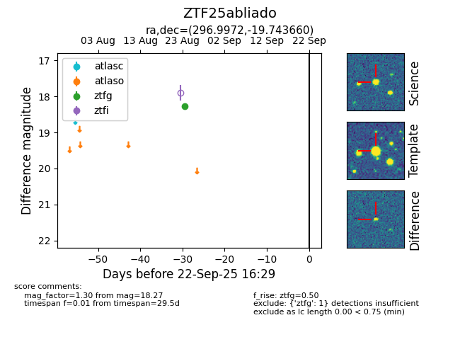

FINK: ZTF25abliado
Lasair: ZTF25abliado
ALeRCE: ZTF25abliado
ZTF25abliado (ztf,fink)
equatorial (ra, dec) = (296.9972,-19.74366)
galactic (l, b) = (20.8227,-21.01677)

last ztfg=18.27
1 ztfg detections